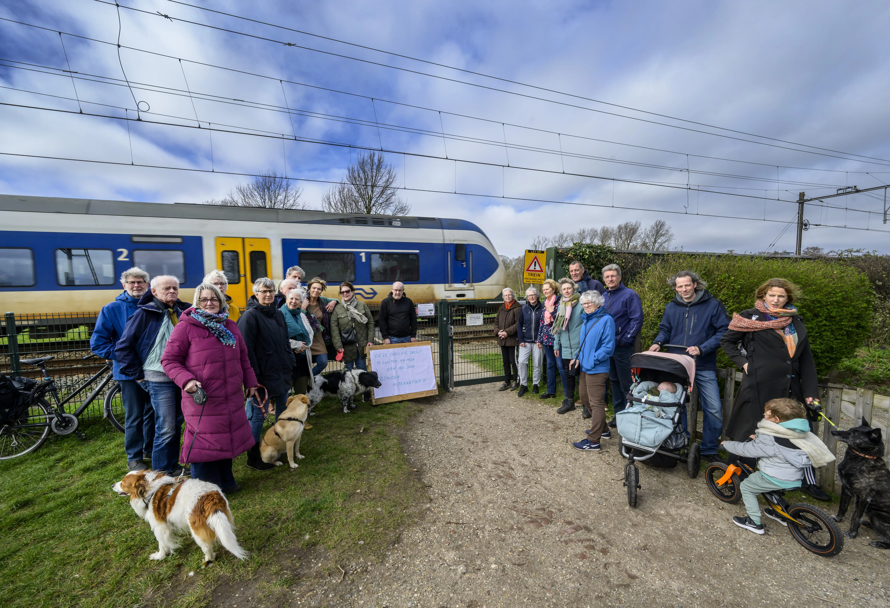
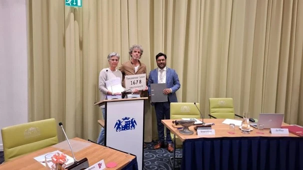
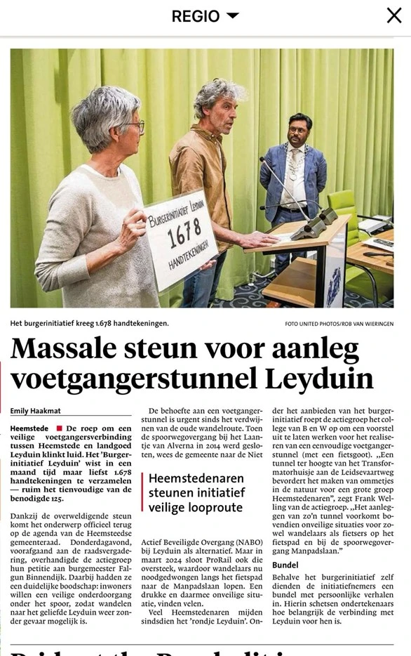

Veiligheid
Een tunneltje scheidt langzaam verkeer volledig van het spoor. Geen gelijkvloerse kruising meer, dus maximale veiligheid voor voetgangers en fietsers.
Herstel de directe veilige verbinding voor wandelaars tussen Heemstede en Buitenplaats Leyduin
Het Burgerinitiatief Leyduin is een initiatief van inwoners van Heemstede dat pleit voor de realisatie van een voetgangerstunnel (met fietsgoot) onder het spoor bij Buitenplaats Leyduin.
Aanleiding is de definitieve sluiting van de onbewaakte spoorwegovergang op 29 maart 2024 door ProRail. Sindsdien ontbreekt een veilige en directe toegang voor wandelaars tot het natuurgebied.
Het initiatief werd ondertekend door ruim 1600 inwoners en op 17 april 2025 officieel ingediend bij de burgemeester. Een tunneltje herstelt een veilige en directe verbinding met het natuurgebied na de afsluiting van de onbewaakte spoorwegovergang in maart 2024 door ProRail.

De onbewaakte spoorwegovergang bij het Laantje van Leyduin was jarenlang een geliefde wandel- en fietsverbinding tussen de Leidsevaartweg in Heemstede en Buitenplaats Leyduin. Voor veel inwoners was dit de toegang tot een gezond ommetje in de natuur.
In het kader van een landelijk veiligheidsprogramma sluit ProRail onbewaakte spoorwegovergangen (NABO's). De overgang bij Leyduin is daarom definitief afgesloten op 29 maart 2024. Daarmee is een belangrijke verbinding voor wandelaars verdwenen.

Sinds de afsluiting zijn bezoekers van Buitenplaats Leyduin aangewezen op de bewaakte spoorwegovergang bij de Manpadslaan. Dit leidt tot meerdere problemen:
Kortom: de huidige situatie is onveilig, onpraktisch en ontmoedigt recreatief gebruik van het gebied.


Al vóór de sluiting is gezocht naar een veilig alternatief. In maart 2022 werd een intentieovereenkomst tussen de gemeente Heemstede en ProRail getekend om een voetgangerstunnel met fietsgoot te bouwen, gesitueerd op het weiland links van het voormalige pompstation langs de Leidsevaartweg.
De bouw is echter nooit gestart. Sommige politieke partijen wilden alleen instemmen met een volwaardige fietstunnel met hellingen. Dit plan bleek financieel onaantrekkelijk en verdween vervolgens van de agenda.
Toen duidelijk werd dat de overgang definitief zou sluiten en de tunneloptie was geschrapt, is een actiegroep opgericht om opnieuw aandacht te vragen voor een veilige doorgang naar Leyduin. Volgens ons is een tunneltje de beste oplossing hiervoor.
Het was inmiddels ook duidelijk dat de gemeente daar zelf verder geen alternatieve plannen of voorzieningen voor had. Een Burgerinitiatief biedt de mogelijkheid om de tunneloptie opnieuw op de agenda van de gemeenteraad te krijgen.
Binnen korte tijd werden 1.700 handtekeningen en vele steunbetuigingen van Heemsteedse inwoners opgehaald die nodig waren voor het indienen van het eerste Burgerinitiatief in deze gemeente. Het initiatief is in april 2025 aangeboden en staat nu op de agenda van de gemeenteraad om de haalbaarheid en financiering te onderzoeken.
Met het Burgerinitiatief Leyduin verzoeken de indieners de gemeenteraad van Heemstede om die besluiten te nemen die de realisatie van een eenvoudige voetgangerstunnel (met fietsgoot) onder het spoor bij Leyduin mogelijk maken. Dit ter vervanging van de inmiddels afgesloten Niet Actief Beveiligde Overweg (NABO).
Het doel is een veilige, toegankelijke onderdoorgang te realiseren die de verbinding met Leyduin herstelt voor het gezonde en veilige “ommetje”.
Een tunneltje scheidt langzaam verkeer volledig van het spoor. Geen gelijkvloerse kruising meer, dus maximale veiligheid voor voetgangers en fietsers.
De huidige omleiding via de Manspadlaan kost wandelaars aanzienlijk meer tijd. Een tunnel herstelt de korte, directe route naar het natuurgebied.
Buitenplaats Leyduin en het achterliggende duingebied zijn van grote recreatieve waarde. Een goede verbinding spreidt de recreatiedruk en maakt de natuur toegankelijk voor meer mensen.
Wandelen en fietsen in de natuur dragen bij aan lichamelijke en mentale gezondheid. Een directe, aantrekkelijke route verlaagt de drempel om naar buiten te gaan.
Het plan in het Burgerinitiatief wordt ondersteund door onder andere:
Het burgerinitiatief voor een fietstunnel bij Leyduin in Heemstede wordt gesteund door partijen die inzetten op verkeersveiligheid en duurzame recreatie.
In de raad is er aandacht voor de inhoudelijke argumenten:
Er wordt ingezet op gesprekken met ProRail en Landschap Noord-Holland over de financiering. De raad heeft gevraagd om een nader onderzoek door het college.
Met het oog op de gemeenteraadsverkiezingen op 18 maart 2026 is het interessant de standpunten van de verschillende partijen na te gaan.
Uitgesproken voorstander. Het afsluiten van de verbinding dwingt mensen vaker de auto te pakken. Het initiatief verbetert veiligheid en vermindert verkeersdruk.
Benadrukt het belang van een goede en veilige recreatieve verbinding. Heeft met een motie in de raad het onderzoek naar de voetgangerstunnel versneld.
De gewenste einddatum voor afronding van de onderzoeken en verdere uitwerking door de gemeenteraad was oorspronkelijk december 2025.
In de begrotingswijzigingen voor 2026 wordt de financiële doorwerking van diverse projecten verder verwerkt.
Via deze website willen we alle mensen die het Burgerinitiatief gesteund hebben bedanken en informeren. Hier delen we informatie en houden we u op de hoogte van de stand van zaken.
Voor vragen en suggesties:
Klik hier voor e-mailadres
Vertel buren, vrienden en familie over het burgerinitiatief.